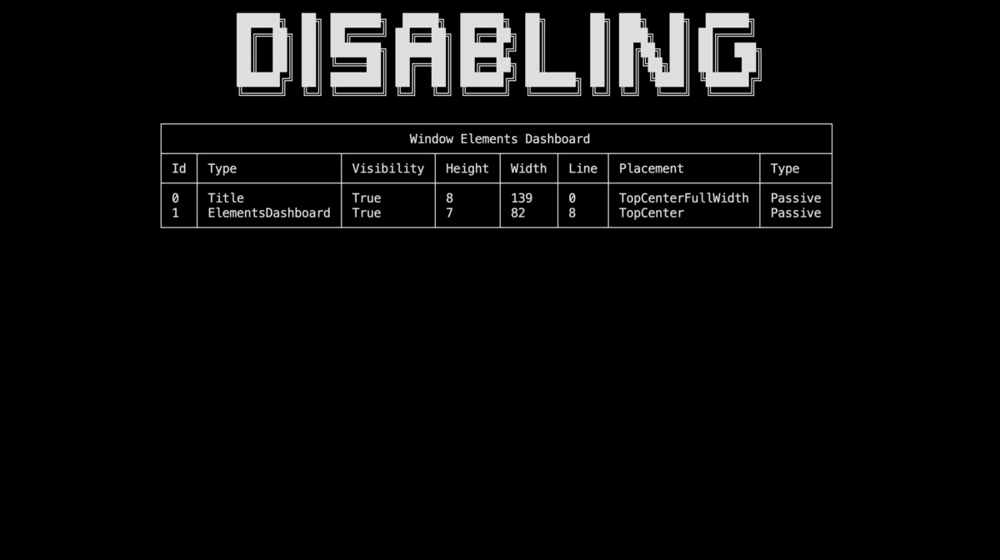
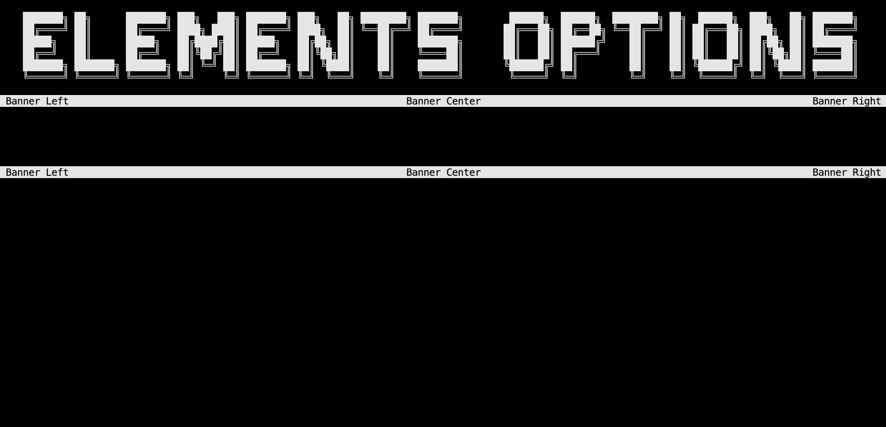
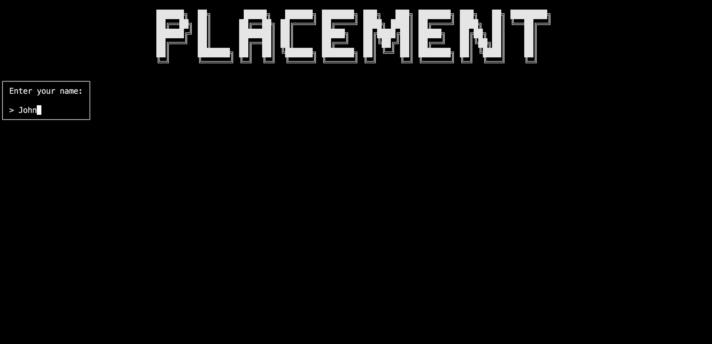
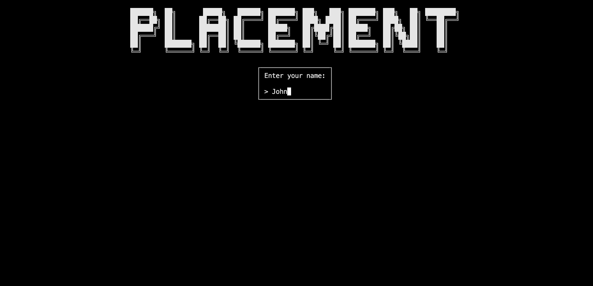
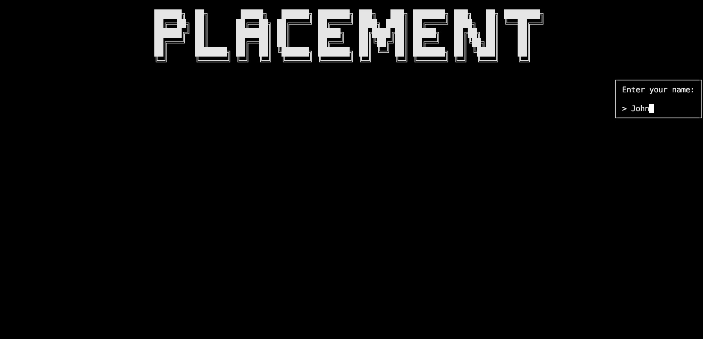
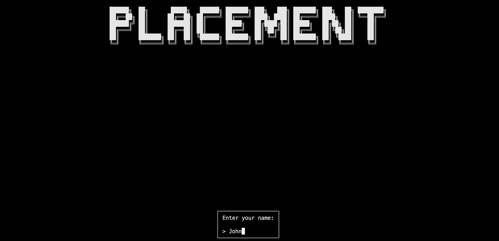
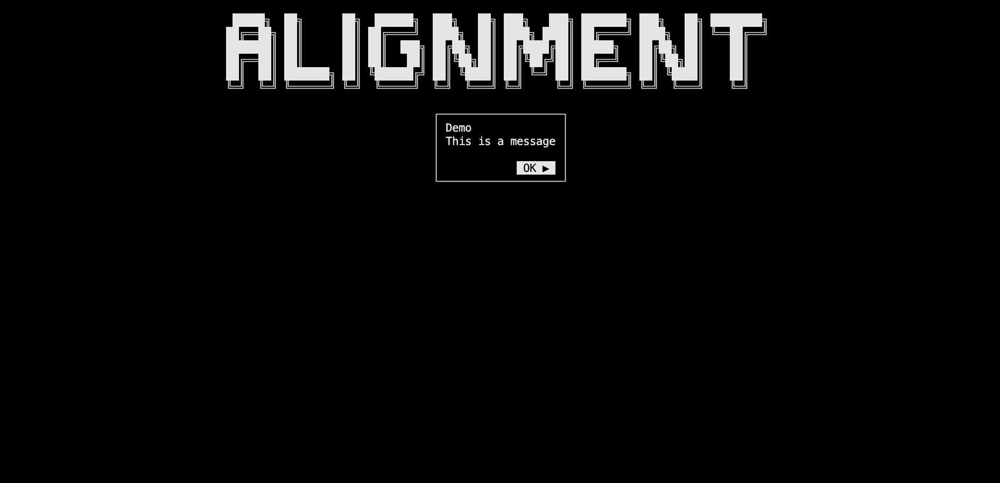
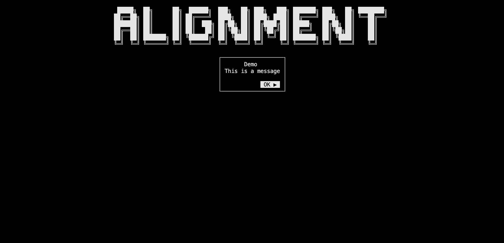
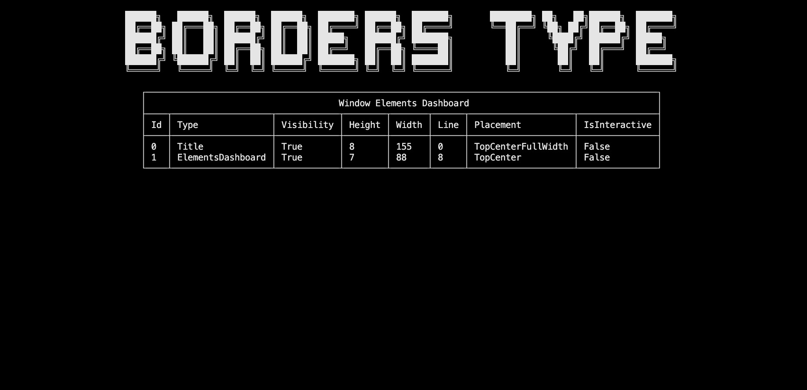
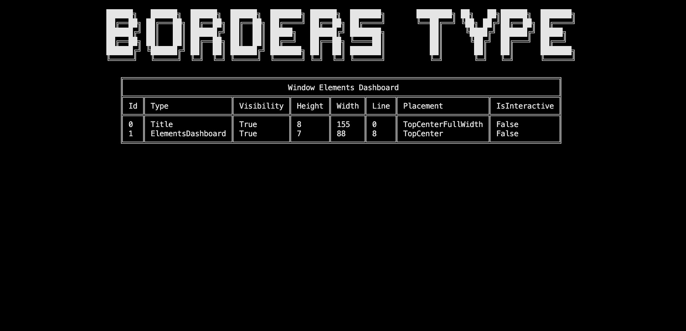

Elements options
In this section, you will learn:
- How to deactivate/ remove elements
- How to use the
ElementsDashboardinspector element - How to use the
HeightSpacerelement - Discover
Placement,TextAlignmentandBordersTypeenumerations - How to use the full potential of the element options
Setup
Warning
We will add using ConsoleAppVisuals.Enums; to the using statements to use the Placement and TextAlignment enumerations.
And your cleaned Program.cs file should look like this:
using ConsoleAppVisuals;
using ConsoleAppVisuals.PassiveElements;
using ConsoleAppVisuals.InteractiveElements;
using ConsoleAppVisuals.Enums;
namespace MyApp
{
internal class Program
{
static void Main(string[] args)
{
Window.Open();
}
}
}
Disabling elements
We tackled adding elements to the window. Now, let's see how to do the opposite.
To disable element rendering, you have two options:
- Deactivate the element
- Remove the element
Deactivating
Deactivating an element can be useful for it to be used later. To do so, let's create a Title element and deactivate it. Nothing will be rendered on the screen.
Window.Open();
Title title = new Title("Elements options");
Window.AddElement(title);
Window.DeactivateElement(title);
Window.Render();
Window.Close();
Let's see how to perceive the effect of deactivating an element. Update your code to add a ElementsDashboard passive element and deactivate the title. The dashboard will be rendered, but not the title:
Note
The method Window.Freeze() is used to stop the execution by waiting the user to press a key (Enter by default) to see the window content without exiting the application when the window only contains passive elements.
Window.Open();
Title title = new Title("Elements options");
Window.AddElement(title);
ElementsDashboard dashboard = new ElementsDashboard();
Window.AddElement(dashboard);
Window.Render();
Window.Freeze();
Window.DeactivateElement(title);
Window.Render();
Window.Freeze();
Window.Close();

As you noticed, the title is not rendered on the screen because its Visibility property has been set to false.
Removing
Removing an element is useful when you don't want to use it anymore. To do so, let's create a Title element and remove it. Nothing will be rendered on the screen.
Window.Open();
Title title = new Title("Disabling");
Window.AddElement(title);
Window.RemoveElement(title);
Window.Render();
Window.Close();
Let's see how to perceive the effect of removing an element. Update your code to the following:
Window.Open();
Title title = new Title("Disabling");
Window.AddElement(title);
ElementsDashboard dashboard = new ElementsDashboard();
Window.AddElement(dashboard);
Window.Render();
Window.Freeze();
Window.RemoveElement(title);
Window.Render();
Window.Freeze();
Window.Close();
Setting a height spacer between elements
Sometimes, you may want to add a space between elements. To do so, you can use the HeightSpacer element. It is a passive element that will only render a space of a specific height between elements.
Here is a concrete example between two banners:
Window.Open();
Title title = new Title("Elements options");
Window.AddElement(title);
Banner banner1 = new Banner();
HeightSpacer spacer = new HeightSpacer(5);
Banner banner2 = new Banner();
Window.AddElement(banner1, spacer, banner2);
Window.Render();
Window.Freeze();
Window.Close();

Note
You may update afterward the Placement and Height of the HeightSpacer element using the UpdatePlacement() and UpdateHeight() methods.
Access and update elements parameters
In all the tutorials and the example project the elements definitions are simplified and do not declare all the arguments available. To see all the arguments available for each element, you can consult the references documentation.
Most of them are specific with generic type (string, int, bool, List, ...) and are used to customize the element. But some of them are common to all elements and are used to place the element on the window. These are the Placement and TextAlignment enumerations.
Placement
The Placement enumeration is used to place elements at a convenient location on the window. It is used by every element from the library that can be placed on the window. According to the placement, the element position and line will be calculated and rendered.
The available values are:
TopLeft: x(line) = 0, y(char) = 0

TopCenter: (Default) x(line) = 0, y(char) = windowWidth / 2

TopRight: x(line) = 0, y(char) = windowWidth

TopCenterFullWidth: x(line) = 0, y(char) = 0 (In fact, it is the same asTopLeftbut we know that the element will be rendered with the full width of the window, following top elements will be placed below it)
BottomCenterFullWidth: x(line) = windowHeight, y(char) = 0 (In preview for now as not fully implemented)

Note
To choose the placement of an element, you can either set it from the constructor or use the UpdatePlacement() method after creating the element.
Prompt prompt = new Prompt("Enter your name:", "John", Placement.TopCenter);
// or
prompt.UpdatePlacement(Placement.TopCenter);
TextAlignment
The TextAlignment enumeration is used to align the text in a string. It is used by some elements from the library. Here are the available values:
Left: Align the text to the left

Center: (Default) Align the text to the center

Right: Align the text to the right
Note
To choose the text alignment of an element, you can either set it from the constructor or use the UpdateTextAlignment() method after creating the element (some elements may not have this method if the text alignment is not used in it so refer to the references documentation to get that specific information).
Dialog dialog = new Dialog(new List<string>(){"Demo", "This is a message"}, null, "OK ▶", TextAlignment.Center);
// or
dialog.UpdateTextAlignment(TextAlignment.Center);
BordersType
The BordersType enumeration is used to set the borders of an element. It is used by the table and embed elements from the library. Here are the available values:
SingleStraight: (Default) Single lines with straight corners

SingleRound: Single lines with round corners
SingleBold: Single bold lines with straight corners
DoubleStraight: Double lines with straight corners

ASCII: ASCII basic characters for the borders (+,-,|only)
Warning
The following types may not work on Visual Studio or Windows Command Prompt:
SingleRoundSingleBold
Note
To choose the border type of an element, you can either set it from the constructor or use the UpdateBordersType() method after creating the element (some elements may not have this method if the border type is not used in it so refer to the references documentation to get that specific information).
ElementsDashboard dashboard = new ElementsDashboard(Placement.TopCenter, BordersType.SingleStraight);
// or
dashboard.UpdateBordersType(BordersType.SingleStraight);
Conclusion
In this section, you learned how to deactivate and remove elements from the window. You also discovered the Placement and TextAlignment enumerations and how to use the full potential of the element options by knowing all the arguments available. You may now be able to use more complex elements and place them at your desired location.
Have a question, give a feedback or found a bug? Feel free to open an issue or start a discussion on the GitHub repository.